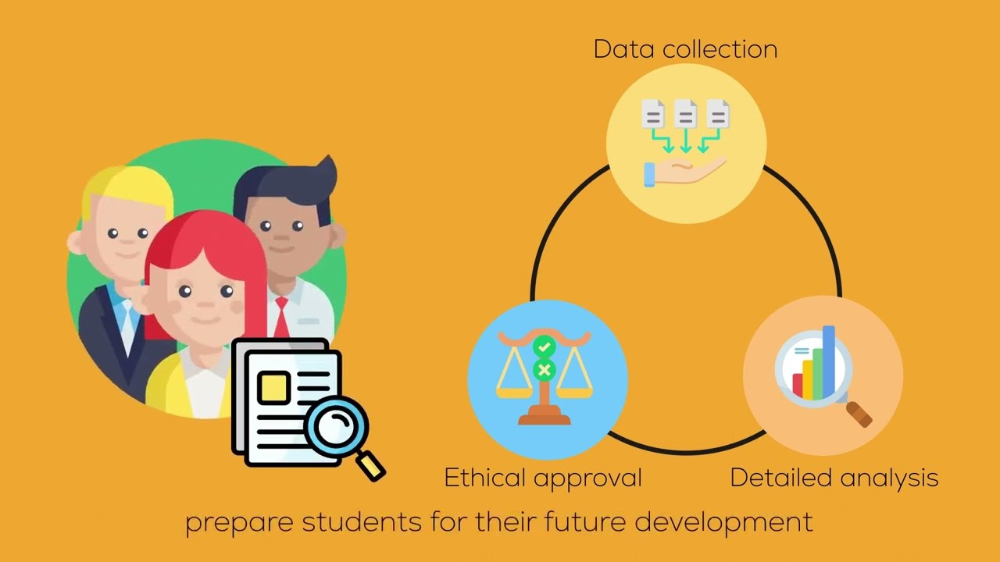

As a general principle, programmes are designed in alignment with the graduate attributes, whereas courses are designed according to programme-level learning outcomes. An ideal programme design balances the five key interlocking elements in the
integrated framework: desired learning outcomes, content, learning activities, assessment and feedback.
The videos below showcase the good practices of Programme Design that are identified from the third cycle undergraduate programme review.
IT Foundation Course
Well-designed course
Catering to diverse students needs
Revamping the course in line with the University strategic plan
Mathematics
Five different streams to meet various students' academic needs
Social Work
Using micro-meso-macro-learning model to orangize the courses

Research components and capstone courses to cater for students' needs